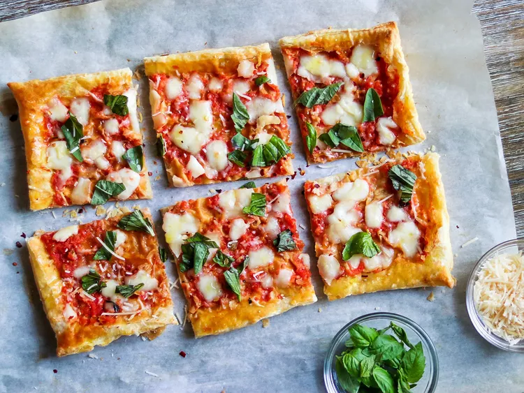

Margherita Pizza recipe

This quick lunch or dinner pizza is made with prepared puff pastry dough as a shortcut. The results are a light, flaky crust for a unique pizza.
Feel free to modify with your favorite pizza toppings.
Ingredients
- 2 sheets frozen puff pastry, thawed
- 1 large egg
- 1 tablespoon water
- 1 (14-1/2 ounce can) whole peeled tomatoes, drained
- 2 teaspoons extra-virgin olive oil, divied
- 1 clove garlic
- 1 pinch sea salt
- 6 ounces fresh mozarella cheese, chopped
- ¼ cup shredded Parmigiano-Reggiano cheese
- 10 leaf basil leaves, torn
Directions
Step 1
- Preheat the oven to 425 degrees F (220 degrees C).
Spread each sheet of puff pastry onto a piece of lightly floured parchment paper.
Use a rolling pin to roll pastry into even rectangles. Lift pastry (with parchment paper) onto baking sheets.
Step 2
- Pierce puff pastry all over with a fork.
Beat egg with water in a small dish; brush pastry all over with egg wash.
Step 3
- Bake in the preheated oven for 10 minutes.
Step 4
- Meanwhile, pulse tomatoes, 1/2 teaspoon of the olive oil, garlic, and a pinch of salt together in a food processor until pureed.
Step 5
- Carefully press pastry crusts down to deflate them.
Spread half the tomato sauce evenly to within about an inch of edges of each crust; drizzle with remaining olive oil.
Top evenly with mozzarella cheese and Parmigiano-Reggiano cheese.
Step 6
- Bake until cheese is melted and crust edges are golden, about 5 minutes more.
Remove from the oven and scatter basil leaves over the top. Slice and serve hot.